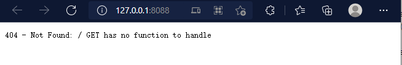

编写一个网络服务器¶
接下来为了说明 IWebCore 的使用，我们创建一个简单的 web 项目
创建 一个基本的服务器项目¶
-
下载IWebCore, 关于 IWebCore 的使用方式， 参考 IWebCore使用方式
-
新建一个
Qt Console Application, 修改*.pro文件如下：1 2 3 4 5 6 7 8 9 10
QT -= gui QT += sql core network xml CONFIG += c++11 console CONFIG -= app_bundle include(../../../src/src.pri) SOURCES += \ main.cpp- 在第2行， 引入 sql, core, network, xml 四个库
- 在第7行，包含 "IWebCore" 的
src.pri， 引入 IWebCore 库
-
修改
main.cpp如下：1 2 3 4 5 6 7 8 9 10 11
#include <IWebCore> int main(int argc, char *argv[]) { IWebApplication app(argc, argv); IHttpServer server; server.listen(); return app.exec(); }-
在第1行，引入IWebCore库， 这同样是在每一个头文件中需要引用的库。
-
在第5-10行，初始化 IWebApplication,创建并运行一个server。
-
这样一个server 就完成了， 先运行运行一下项目, console 输出如下：
1 2 3 4 5 6 7 8 9 10
_____ _ _ _ _____ |_ _|| | | | | | / __ \ | | | | | | ___ | |__ | / \/ ___ _ __ ___ | | | |/\| | / _ \| '_ \ | | / _ \ | '__|/ _ \ _| |_ \ /\ /| __/| |_) || \__/\| (_) || | | __/ \___/ \/ \/ \___||_.__/ \____/ \___/ |_| \___| Load SystemEnvironment [√] Auto Load Resource Task Finish server started at 127.0.0.1:8088 -
and the server will be run at: http://127.0.0.1:8088, open it in browser and the browser will show:

-
添加一个Controller和首页请求¶
在上面的例子中，一个服务器创建了，但是没有任何的 url 映射，所以不管什么样url, 都会返回 404 NOT FOUND 信息。接下来，我们添加一个 controller 处理 url。
首先，创建 MyController 类, 包含 MyController.h 和 MyController.cpp 两个文件：
头文件的代码是：
1 2 3 4 5 6 7 8 9 10 11 12 13 14 | |
- 第1行
#pragma once开头， 可以查看 [] - 第3行 包含库的头文件
- 第5行 以public 的方式 继承 IControllerInterface.
- 第7行 使用
Q_GADGET - 第8行 使用 $AsController 表示这个是一个 controller 类，
- 第12-13行 定义一个 index 函数,并将函数映射到
/地址，
源文件如下
1 2 3 4 5 6 | |
- 这个并不需要多解释，就是index 函数， 返回 "hello world".
让我们重新运行项目 console 当中输出:
_____ _ _ _ _____
|_ _|| | | | | | / __ \
| | | | | | ___ | |__ | / \/ ___ _ __ ___
| | | |/\| | / _ \| '_ \ | | / _ \ | '__|/ _ \
_| |_ \ /\ /| __/| |_) || \__/\| (_) || | | __/
\___/ \/ \/ \___||_.__/ \____/ \___/ |_| \___|
Load SystemEnvironment
[√] Auto Load Resource Task Finish
[√] Controller MyController registered
server started at 127.0.0.1:8088
可以看见输出多了第10行， Controller MyController registered , 这个表示 controller 已经自动注册到我们的程序里面了，关于如何注册，可以参考静态注册
我们重新打开 浏览器，输入 http://127.0.0.1:8088, 浏览器输出以下内容:
可以看到请求成功。
再写一个请求¶
头文件修改如下：
1 2 3 4 5 6 7 8 9 10 11 12 13 14 15 16 17 18 | |
可以看见 只是添加了15-17 三行代码，
- 第15 行：这是
runtime-assertion检查的一部分，现在不需要关心，有兴趣可以查看运行时检查 - 第17行，定义 hello 函数， 并且有一个
QString name参数。关于函数参数的设定,请查看controller函数参数 - 第16行，定义个
GET请求，将/<name>url 映射到 hello 函数。 关于/<name>请查看 url 映射规则
源文件如下:
1 2 3 4 5 6 7 8 9 10 11 | |
依然是一个很普通的函数。
接下来我们打开浏览器输入 http://127.0.0.1/yuekeyuan, 浏览器输出以下内容：
可以看见浏览器返回的正是我们想要的内容.
基本的介绍就到这里，接下来可以学习：
- assertion
- configuration
- controller and mapping
- database, table, view, and model.